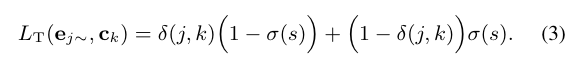
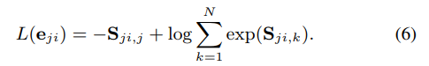

[Link] to arXiv paper
Li Wan, Quan Wang, Alan Papir, Ignacio Lopez Moreno
In this paper, we propose a new loss function called generalized end-to-end (GE2E) loss, which makes the training of speaker verification models more efficient than our previous tuple-based end-to-end (TE2E) loss function. Unlike TE2E, the GE2E loss function updates the network in a way that emphasizes examples that are difficult to verify at each step of the training process. Additionally, the GE2E loss does not require an initial stage of example selection. With these properties, our model with the new loss function decreases speaker verification EER by more than 10%, while reducing the training time by 60% at the same time. We also introduce the MultiReader technique, which allows us to do domain adaptation - training a more accurate model that supports multiple keywords (i.e. "OK Google" and "Hey Google") as well as multiple dialects.
There had been a typo in Eq. (3) of the original paper. The correct equation should be:

There had also been a typo in Eq. (6) of the original paper. The correct equation should be:

A Lingvo-based open source version of the GE2E loss is available [here].
We are also aware of several third-party implementations of this work, such as:
However, please note that we are NOT responsible for the correctness of any third-party implementations. Please use your own judgement to decide whether you want to use these implementations.
We can't share our datasets externally. But a big part of our training data are based on public datasets. You can find a list of these public datasets at awesome-diarization
The speaker recognition and embedding technique based on this paper has been applied to multiple domains, including: